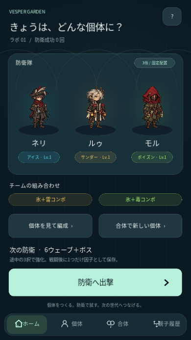
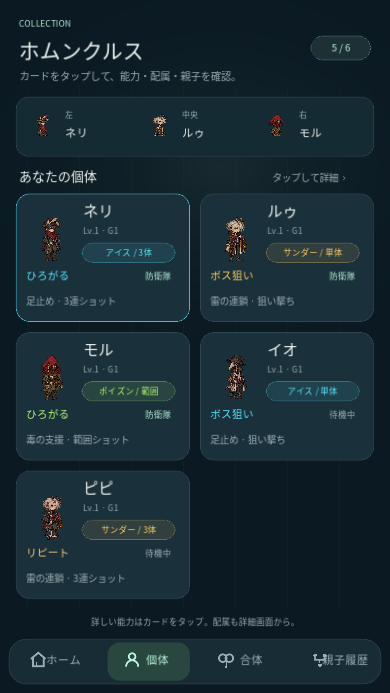
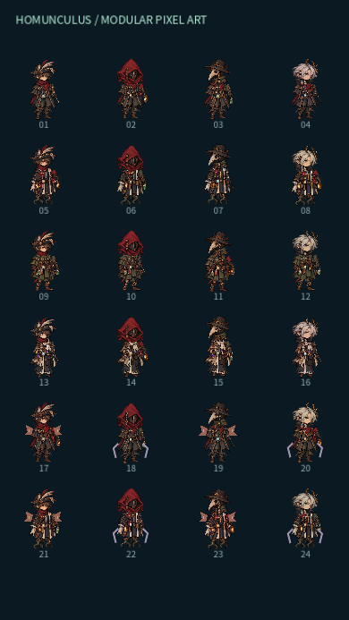
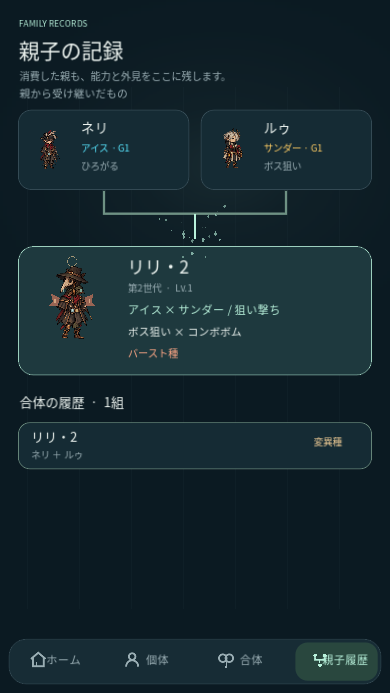
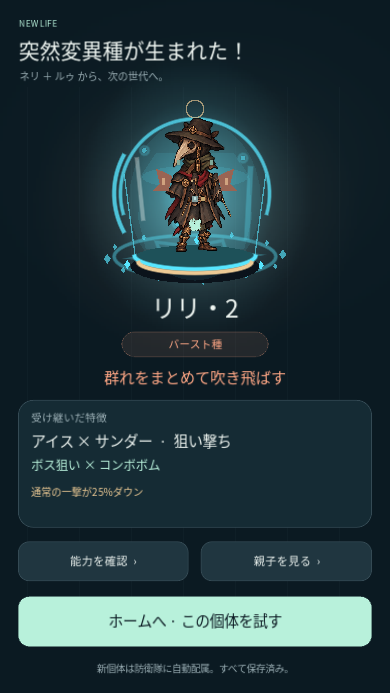
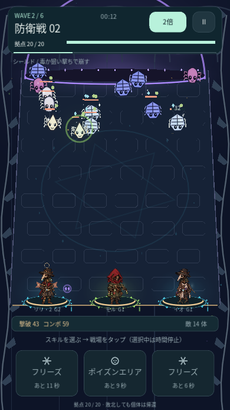

GODOT 4 · ANDROID PROTOTYPE 0.7.1
VESPER GARDEN
参考素材から、育てる個体へ。
今回の変更はキャラクターだけ。支給されたシートの細身の頭身、描き込み、落ち着いた色を参考に、ホムンクルスを共通パーツのドット絵へ変更しました。ゲームシステムとUI操作は前版と同じです。
Android APKをダウンロード0.7.1 · 約59 MB · Android 7以降ARM64・ARMv7 / OpenGL ES 3.0。前版へ上書きして個体・成長・因子・履歴を引き継げます。
スマホに入れる
- ChromeなどでAPKを保存します。
- 通知またはファイルアプリで開き、求められた場合、そのアプリに「不明なアプリのインストール」を許可します。
- Vesper Gardenをインストールして起動。セーブを引き継ぐ場合はアンインストールせず上書き更新します。
共通パーツで量産
- 頭部4種、衣装4種、下半身4種、腕と小物4種。少数の素材を組み替えます。
- 暗い赤・オリーブ・革色・紺・銀髪と古い金具。顔や服の密度を増やし、既存の外見データで親子の特徴を描き分けます。
- 頭・服・脚・腕を別々に描画。待機と攻撃反応を維持し、小さな編成アイコンは胸像にしています。
- 能力・成長・合体・変異確率・敵・スキル・倍速・保存形式は前版のままです。












操作
個体カードをタップして能力・配属を確認し、ホームから出撃。通常攻撃は自動。スキルを選んで時間停止中に戦場をタップ。右上で1倍／2倍。戦闘後に因子1つを保存し、親2体を合体して次の防衛へ進みます。
確認範囲
PC上のGodotで24体のパーツ組み合わせ、スマホサイズのタップ、全防衛→合体→新個体で全防衛を確認。モデルと描画・操作を220項目で検証。キャラクター以外のゲームロジックが前版と同一であること、APKの署名・更新互換・配布ファイルを照合しています。Android実機の起動と性能は未確認です。